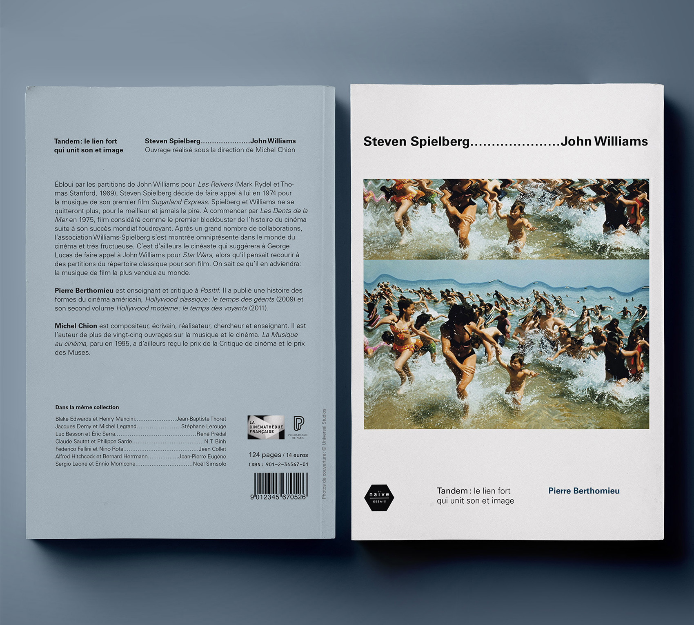
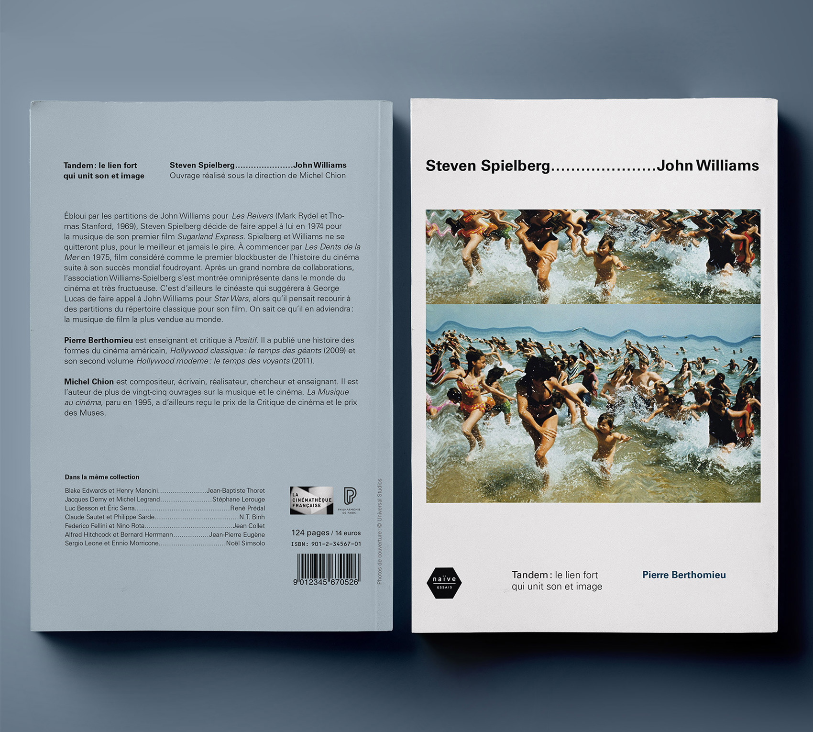

This collection of eight books and CDs, titled "Tandem : le lien fort qui unit son et image", analyzes the relationship between eight of the greatest film directors and their key music composer. The design focuses on the correspondance between sound and image, by reprising a traditional film credits code : the dotted lines.
 
